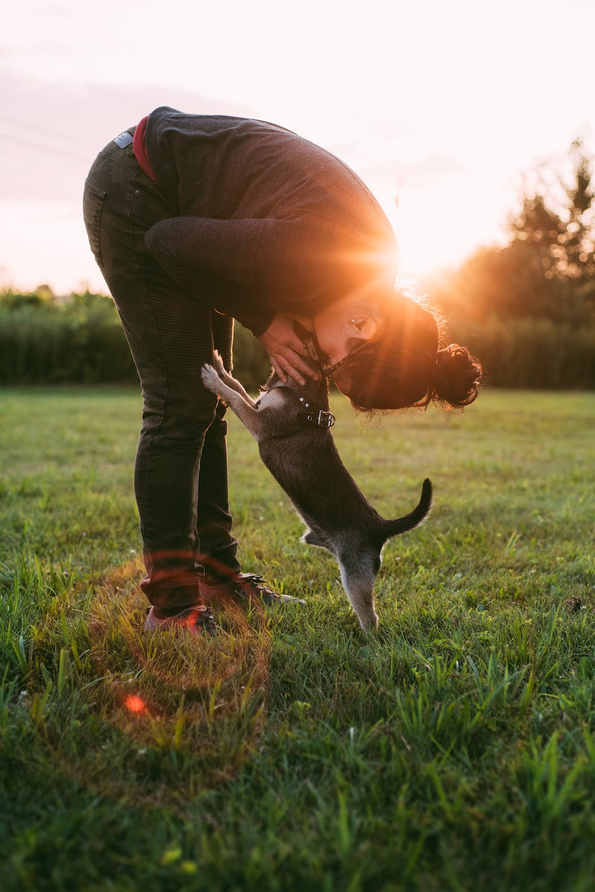

1. Monsanto
From the unavoidable Alameda Keil do Amaral, where we always have authentic dog festivals on
weekends, to Parque do Calhau and Mata de Benfica, Monsanto could not fail to be at the top
of our list of parks to take your dog in Lisbon!
With an area of 1000 hectares, there
is therefore room for everyone in the "lung" of Lisbon: both for those who love a good
"doggy day out" on a Saturday afternoon and for those who prefer a walk alone with their
dog.